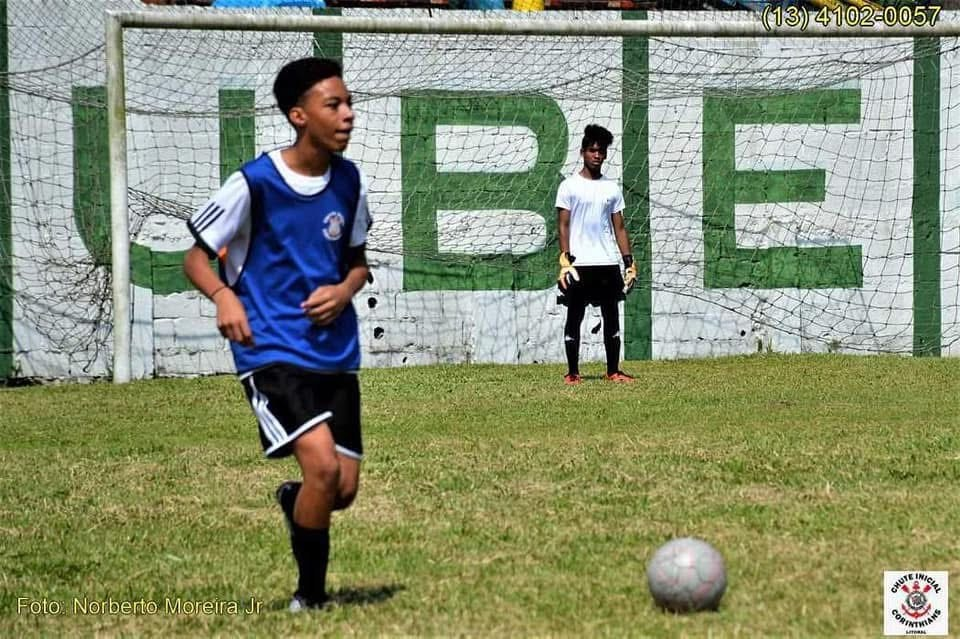

Meu nome é Ivo, tenho 21 anos; sou nascido e criado em Santos. Desde pequeno, o futebol sempre foi mais do que um simples jogo pra mim — era um sonho, uma paixão e, por muito tempo, parte da minha rotina. Joguei bola por anos, em campinhos de terra, quadras e até em alguns times de bairro. Vivia com chuteira nos pés e a cabeça cheia de planos. Meu objetivo era claro: viver do futebol. Mas a vida, como muitos sabem, nem sempre segue o roteiro que a gente imagina. Chegou um momento em que precisei encarar a realidade e começar a trabalhar. As responsabilidades falaram mais alto e o sonho de seguir carreira como jogador teve que ser deixado de lado. Hoje em dia até acompanhar futebol acaba sendo meio complicado com essa rotina agitada, então ultimamente posso até dizer que estou meio por fora das atualizações.
